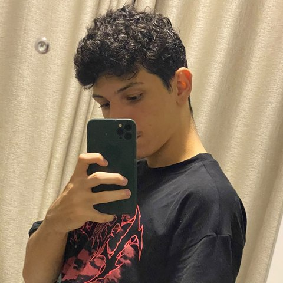

e43b85cc8aad35bb0a
eba9ee55d52464e8be048863e0
264565893e7daa88bf6b49556c
21f3a2792eeeeec4031093b7
e170eae0e3f9a43390cbb70
0edffc63be636e859b5b634ffade3a27
72a888c5c0483b43a61c
0c9be0211109f323a37f6ac6603cf2e81
a87f16500613ecc6dfca95
aabedf77ff515ebbfc33c1ecab87d
6393ed5ae14e0260be23fb21
25bf89cbb910939439ad3e0b6cac1e
bed3b22ff014fdf430782573001a7c
fcfb9c21ba6867111553a200dd0
0f3a602cc3dd5744eda7dddcfb4b5d
cd03309caddd38768c8673bc4
599a92315ada656220761a671d4
99cc7da19be9f4f014deb
ca9f40b89ba0bfda93a9
4bf99337609cd149654156a8869ef7dfa
d13a342c49c0decf12
dbc019b146caa2ef9b2e25b67f
2d5f827808d631a62d0e
4a701108135a33bcad2486968ed65fb
9ae277cbb904c808e0fa8dee0c5b1
6066cd079a21604a2fe826b

Mateus Prado
Web developer